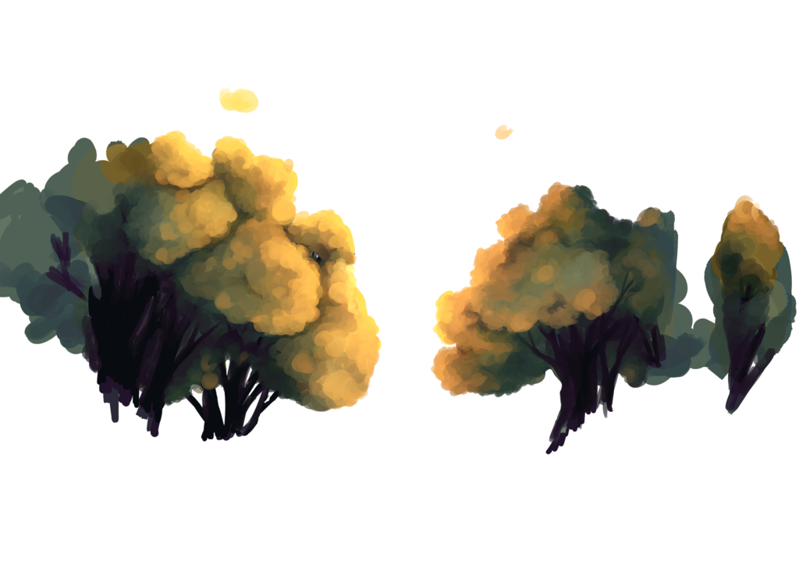
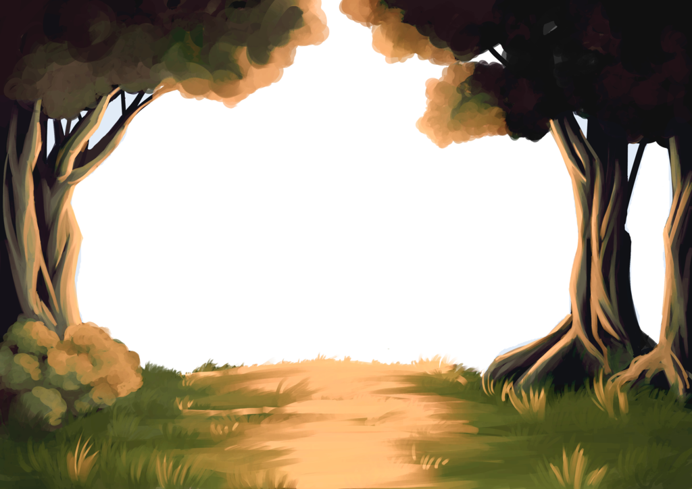

<section class="screen">
    
    
    
    <div class="speech-box-7">
        <p>You can come back anytime you want to yarn.</p>
    </div>
    <div class="btn-round green previous-slide" style="z-index: 11; position: fixed; bottom: 10px; left: 10px;">
        <span><</span>
    </div>
</section>